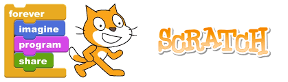

For scratch.mit.edu, click the cat photo.
My Scratch project 1, link in the picture.
Using Scratch, my partner and I design a hide and seek game. We used our own face as the sprite.
First, Wilson's face will pop up at the screen, each time viewer clicks a sprite's face, the score will change.
For Wilson's face, one click equals +1 points; for Yew Mun's face, one click equals -1 points; for Screaming Goat's face, one clicks equals 2 points.
Yew Mun's face sprite will appear after the viewer scores 5 points, also the speed of the face appearing and disappearing will be faster.
When the player reaches to 10 points, a Screaming goat will play hide and seek with you at even faster speed, but a player can score more points from clicking him.
Each time the player clicks at the sprite, it will play a special sound. For instance, Wilson plays the sound "ah", Yew Mun plays the sound "cough_male", and Screaming Goat plays the sound "screaming".
My Scratch project 2, link in the picture.
It's a Presidential Election parody game! This is a two player game, involving trivia, obstacles, and even more gaming experience.
The goal of this game is to race to the White House. Whoever first reaches to the White House wins, whoever's character dies, the opponent wins!
Control: Player 1 (Trump): "w" jumping, "a" left, "d" right.
Player 2 (Clinton): "Upper arrow" jumping, "Left arrow" left, "Right arrow" right.
Players start with score 100 (Hp), each time touches an obstacle will +/- their scores. Scores 0= Die.
My Scratch project 3, link in the picture.
Our app is called "Time Manager". It is to help the people who lacks of ability of time managing and to provide them a perfect schedule for their weekends.
As you can see on the screen, this is the homepage. Select "health mode" to continue. Then app will ask your sleeping hours and eating hours.
After completing the questionaire, we will provide you a schedule for your weekend. Please follow our schedule as we will send notifications hourly to check progress.
We faced difficulties when making the app. For example, we had trouble combining sleeping hours and eating hours together to form an unique schedule.
Also, we did not have a method to convert the data that user picked to a number that the computer would recognize. Luckily, we solved it by using the "math" category in App Inventor.
For the algorithm, we used multiplication. First we used listpickers for users to choose their sleeping and eating hours. Then I put those hours in to a multiplication equation, and result is a number that has an unique schedule attached to it.
For example, a user entered 8 hours sleeping and 3 hours of meal time, the result would be 24. Since I pre set the number 24 attaching to a schedule, when the computer reads the number 24, it will open the schedule in the number.
Right now there are only 9 available schedules for the user to choose. In the future, we will provide more varieties for them.
This content is all based on one mode, the relax mode. We will develop another mode, the hardcode mode, with less sleeping and eating hours and more working hours.
Credits to Youtube and Google for my tutorial. Additionally, I want to thank Taifun Notification because it allows me to use their notification feature on my app. Now my app can send notification hourly to track progress.
Reflection:
Our product mainly focuses on teenagers who do not know how to spend their time wisely. So our app provides schedules for them to follow, so they have the opportunity to spend their time that based on their information.
In addition, besides giving schedules for the teenagers, we also teach them self-control because they have the choice to follow / not follow our app.
My project 4, Python story. Link in the second picture
This is a story telling game. You are reading the story and create your ending.
The background is a boy entering a high school for his senior year. He is told to choose his math class and teacher.
Each time the boy chooses the class and teacher, he will be assigned with one or two math questions.
The boy will have different outcomes if he answers the questions with a right or wrong answers.
For example, if he answers the question wrong in Mr. Moyfman's Pre-calculus class, he will transfer to mr. Firard's class, which has a easier chance for students to pass the class.
My project 5, photo artist, 1.4.7 PLTW. Partner: Chloe Zhang
In this project, I am assigned to make at least 8 changes to a specific photo. I chose the photo of Lebron James and made a few changes to it.
Here are the changes:
The basketball becomes a Pokemon ball. The word “Cleveland” becomes “Raiders”. The number “23” becomes “35”. The logo on the top right of the jersey becomes the logo of Arsenal. The head of James becomes the head of Durant. The picture set upper limits to x-axis. The picture set lower limits to y-axis. Title for the first plot “Lebron James”. Title for the second plot “Kevin Durant”.